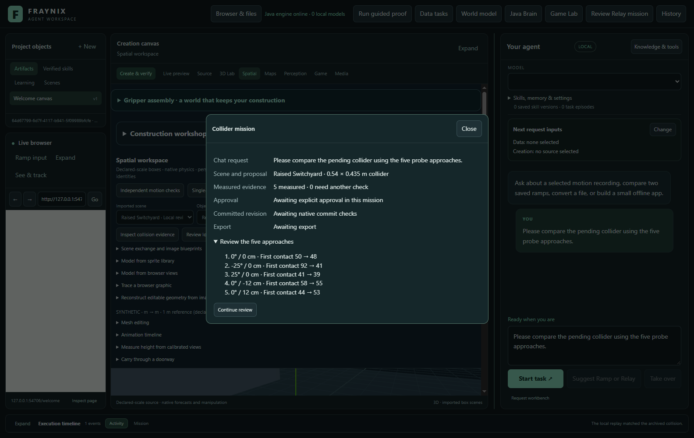
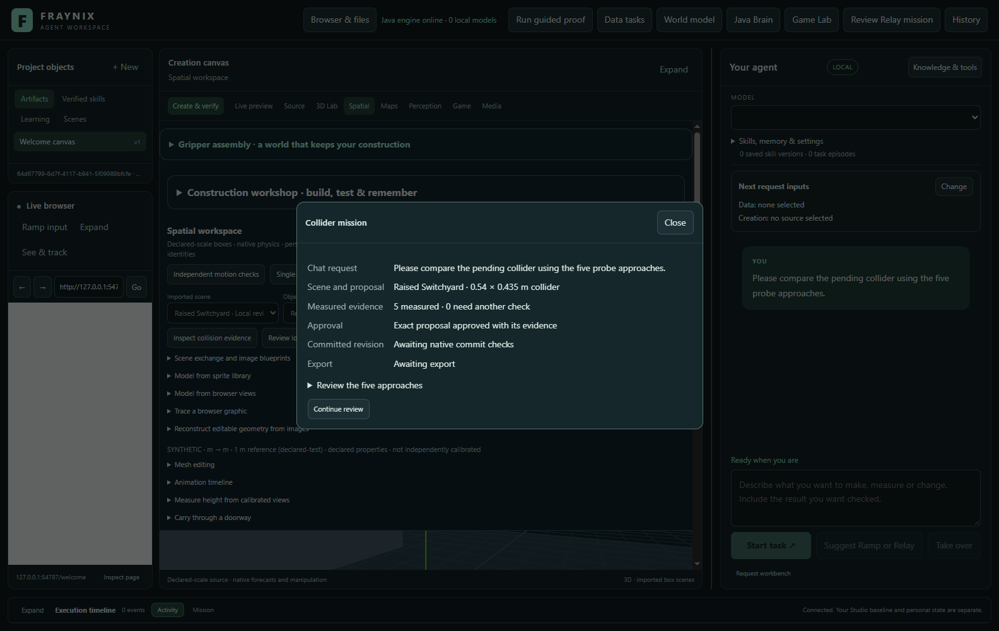
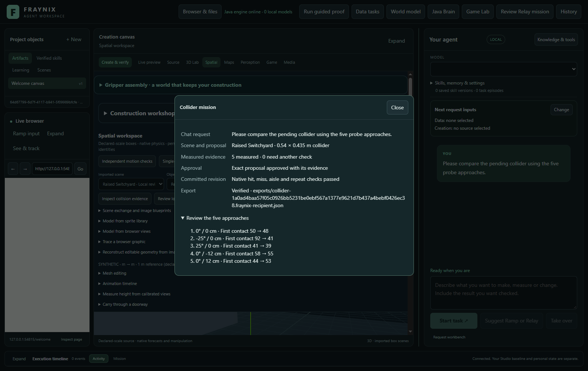

Keep a Chat collider review in one durable mission
Raised Switchyard reopened the same request, comparison, approval and verified file after desktop restart. A clean project independently replayed the exported scene.

The held-out comparison linked to the exact Chat request before approval

The original approval and evidence reopened before the native commit

The complete mission and verified export reopened together
System files
Open source